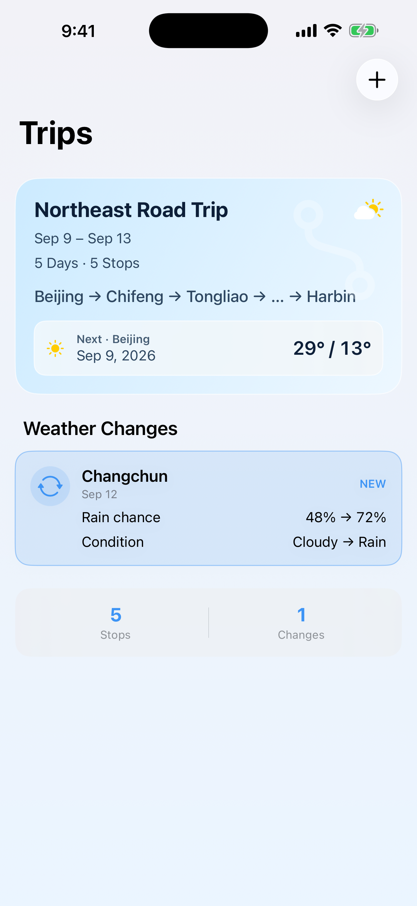
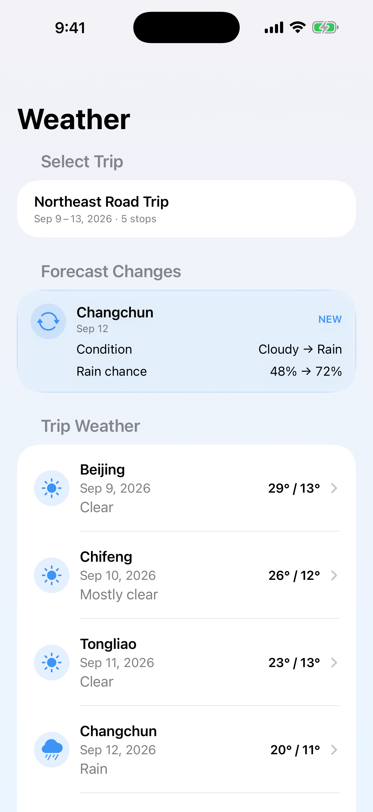
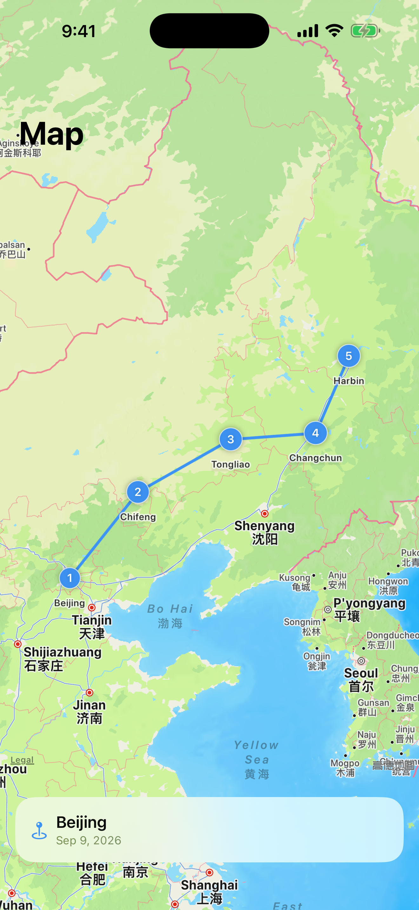

01
多城市行程
添加目的地、抵达日期和停留天数，旅风标会自动整理连续行程。

本地优先
无需注册账号
专为 iPhone 设计
围绕真实行程设计
01
添加目的地、抵达日期和停留天数，旅风标会自动整理连续行程。
02
按照你预计到达当地的日期匹配天气预报，自然地跟进行程进度。
03
从第一站到最后一站，一眼看清整段旅程的安排。
04
在清晰的地图视图中，把行程里的各个地点串联起来。

天气变化
不用反复检查每个城市。旅风标会比较前后天气预报，突出可能影响行程的有意义变化。

行程天气
根据计划抵达日期查看目的地天气，而不是只看当前位置的天气。
更多行程背景
05
旅风标会根据行程中的未来天气，识别强降雨、降雪、雷暴、大风、高温和低温等可能影响旅行的情况。旅风标仅用于旅行规划辅助，不应作为涉及人身安全决策的唯一信息来源。
06
在即将出发的旅行前，旅风标可以通过本地通知提供每日天气简报；即使没有出现明显天气变化，也可以告诉你当前状态。通知和后台更新时间由 iOS 系统调度，无法保证精确执行时间。
07
旅风标结合 Apple MapKit 与内置全球城市索引，在不同地区和网络条件下帮助查找旅行目的地城市。天气仍需要网络连接。
08
已完成的旅行会自动进入历史行程，保留路线，以及 App 当时保存的天气预报变化和风险记录。这些是当时保存的预报，不是实际历史观测天气。
小组件
查看下一站、行程天气，或锁屏上的天气与风险信息。
少一点反复查看
旅风标将行程背景、预报变化和已保存的旅行记录，集中在一个安静清晰的地方。
隐私，从本地开始
无需注册账号。行程数据保存在设备本地。旅风标没有接收你的行程或定位数据的开发者服务器。定位功能为可选，仅在用户开启后用于辅助判断行程进度。